Let  be holomorphic on an open set containing a closed disc
be holomorphic on an open set containing a closed disc
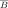
except for finitely many points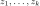
in its interior, and let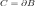
be traversed once anticlockwise. Then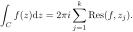
Choose disjoint small circles
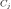
around the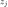
, inside . Cutting the region between
. Cutting the region between  and the into finitely
many pieces each lying in a convex open subset of the domain of
holomorphy, and cancelling the cuts, gives
and the into finitely
many pieces each lying in a convex open subset of the domain of
holomorphy, and cancelling the cuts, gives
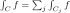
.
On a small circle about , expand in its Laurent series,
which converges uniformly there, and integrate term by term. For
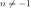
the function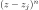
has the primitive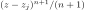
on the punctured plane, so its integral over the closed curve vanishes; for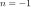
the parametrisation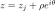
gives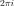
. Hence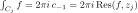
.
If has a simple pole at  , then
, then
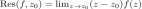
; if it has a pole of order , then
, then
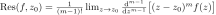
. If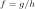
with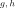
holomorphic, ,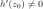
and , then
, then
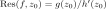
.Write
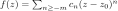
. Then is holomorphic with power series
is holomorphic with power series
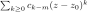
, whose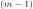
-st derivative at is 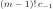
; that is the displayed formula, and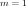
is the first case.
For the quotient,  has a simple zero, so
has a simple zero, so
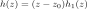
with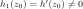
; then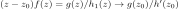
.
Let be holomorphic on an open set containing
except for finitely many poles inside, with no zeros or poles on
. Then
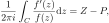
 and
and  count the zeros and the poles inside with
multiplicity.
count the zeros and the poles inside with
multiplicity.
The function
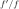
is holomorphic except at the zeros and poles of. Near a zero of order ,  with
, so
with
, so
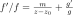
, whose second term is holomorphic: the residue is. Near a pole of order the same
computation with 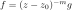
gives residue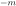
. Summing by the residue theorem gives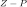
.
Let  be holomorphic on an open set containing
, with
be holomorphic on an open set containing
, with
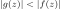
for every on
. Then and
on
. Then and  have the same number of
zeros in , counted with multiplicity.
have the same number of
zeros in , counted with multiplicity.
Neither nor vanishes on , by the strict inequality.
For
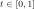
put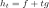
, which also does not vanish on, and let
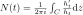
, the number of zeros of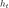
in by the argument principle. The
integrand depends continuously on  , uniformly in on the
compact , since
, uniformly in on the
compact , since 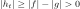
there; hence is continuous. It takes integer values, and a continuous
integer-valued function on the connected
is continuous. It takes integer values, and a continuous
integer-valued function on the connected ![\([0,1]\)](m/b40f419d16d54b95652910807100bb67f190c2b6.svg) is constant, so
is constant, so
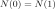
.Rouche's theorem is how one locates roots without solving: perturbing a polynomial by something smaller on a circle does not change how many roots are inside, which gives the fundamental theorem of algebra again in one line and is the standard tool for stability questions, where the zeros of a characteristic function decide whether a solution grows.